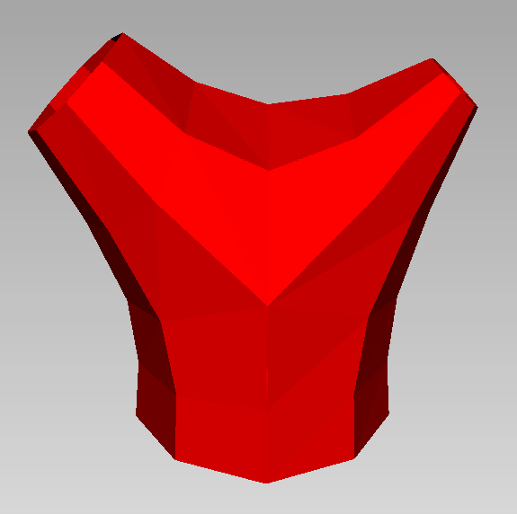
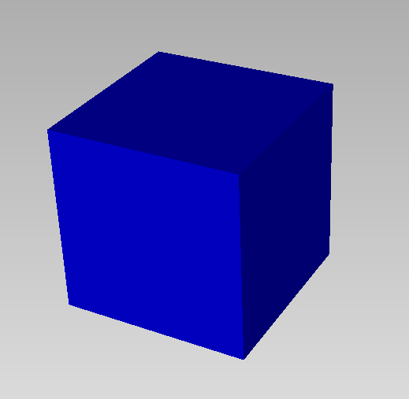

GSplines
The package provide tools for the construction and use of Geometrically Smooth (G1) Splines .
Here is an example of construction of a G1 surface, visualized with 'Axl':
using GSplines, SemiAlgebraicTypes, Axl
m = axldata("y1m1.axl")[1] # read mesh from data file "y1m1.axl"
m[:color] = Axl.red
@axlview m
s = g1surface(m) # compute a G$^1$ smooth surface from the mesh `m`.
@axlview s
Here is another example with an off file.
m1 = offdata("cube.off") # read mesh in off format from file "cube.off"
m1[:color]= Axl.blue
@axlview m1
s1 = g1surface(m1) # compute a G$^1$ smooth surface from the mesh `m1`.
@axlview s1
Notice that the mesh has been subdivided using one step of Catmull-Clark subdivision, so that no extraordinary vertices (of valence $\neq$ 4) are connected by an edge.